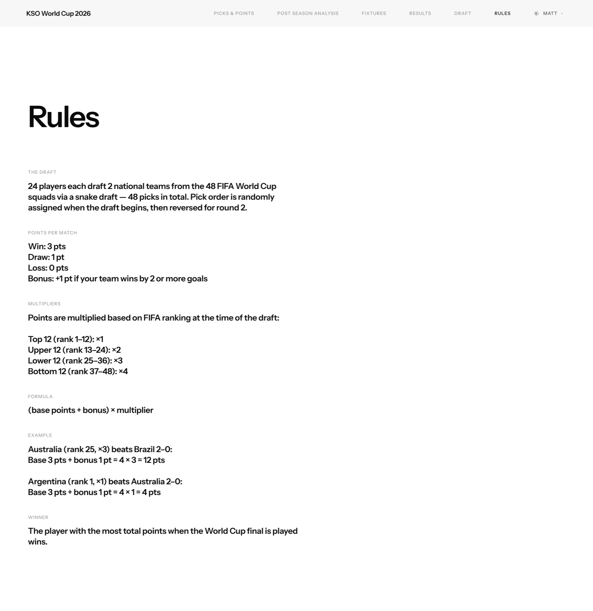
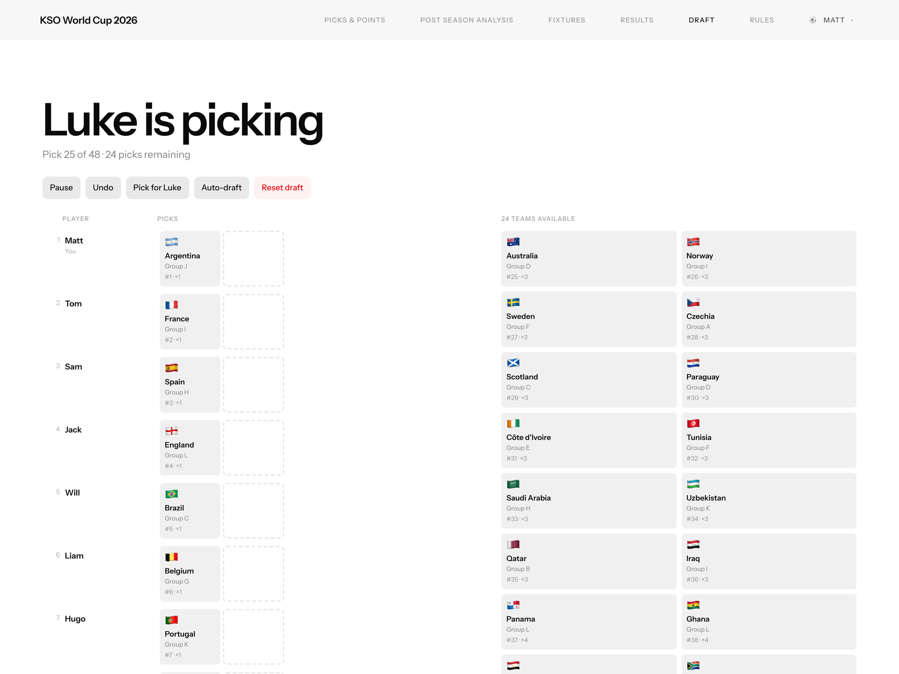
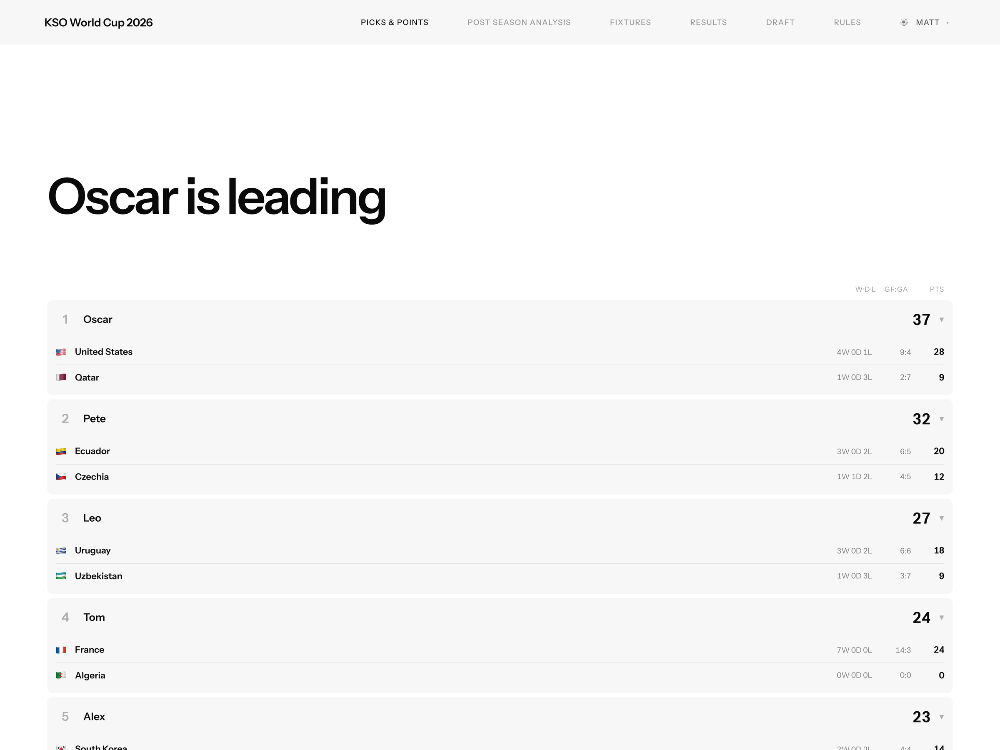
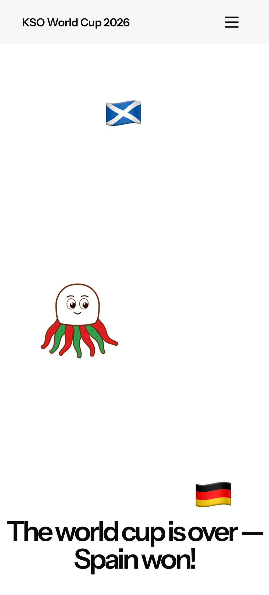
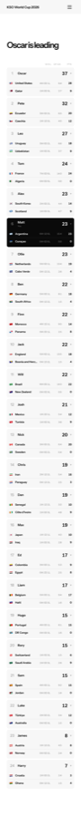
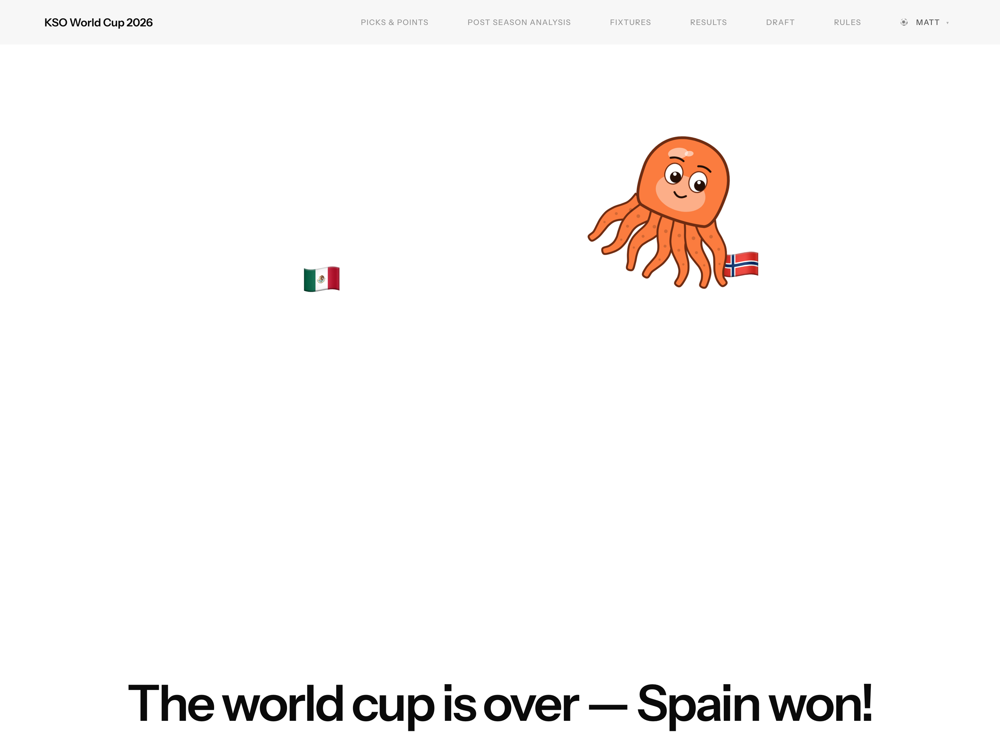
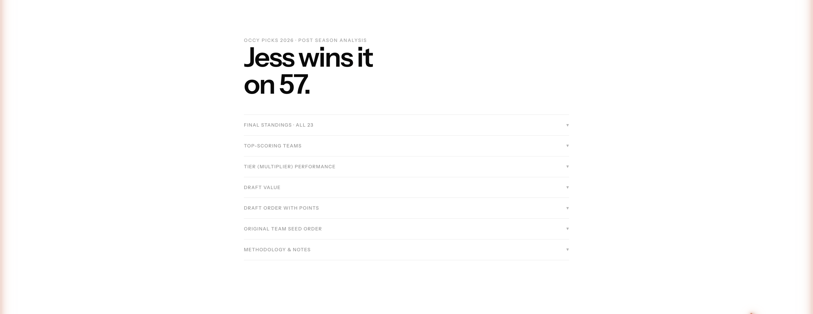

OccyPicks — self-initiated product, game and experience design for a season-long fantasy draft, played by 23 friends across the 2026 FIFA World Cup. Live at occypicks.com.
Every four years my friend group — a couple of dozen people spread across cities and time zones — looks for a way to make a month-long tournament feel like a shared event rather than a series of games we each half-watch alone. Off-the-shelf fantasy football is built for domestic leagues: you manage a squad of individual players week to week. For a one-month World Cup with a casual, social group, that's the wrong shape entirely.
I set out to design something purpose-built for this exact situation. Three problems defined the brief:
So this was really two design problems stacked on top of each other: a game-design problem — invent rules that keep everyone in it and every pick meaningful — and a product-design problem — wrap those rules in something so low-friction and enjoyable that 23 busy people would actually use it for a month.
Before designing anything, I set four goals to hold the whole thing to. They became the lens I used to make every subsequent decision — from the scoring maths to the size of a tap target.
The constraints were fixed and unusually concrete. Forty-eight teams and twenty-three players meant roughly two teams each. The calendar was set by FIFA — I was designing around a real tournament with real kick-off times, played by people in different time zones, mostly on their phones. And it had to be free, instant to join, and impossible to break.
This was a solo project end to end. I moved between three hats, often within a single evening.
The heart of the product isn't a screen — it's a rule. If you draft national teams and simply score three points for a win, the game is decided at the draft: whoever grabs the strongest teams wins, and half the group is eliminated before kick-off. That fails the very first goal. So the central design problem was: how do you make a minnow worth drafting?
My answer was a tier multiplier. I split all 48 teams into four tiers of twelve by FIFA ranking, then inverted the reward: the weaker the team, the more each result is worth.
| Tier | FIFA rank | Multiplier | Design intent |
|---|---|---|---|
| Top | 1–12 | ×1 | Strong teams win often, so each win is worth less. |
| Upper | 13–24 | ×2 | Solid teams; a fair middle. |
| Lower | 25–36 | ×3 | Underdogs; every result matters more. |
| Bottom | 37–48 | ×4 | Minnows win rarely, so when they do it pays off big. |
The base scoring stays dead simple — win 3, draw 1, plus a bonus point for winning by two or more — and the whole total is multiplied by the team's tier. A crucial detail: I score the advancing team in a knockout as a win even when the game goes to penalties, so a shootout is never an anticlimactic draw. Two more mechanics complete the design:

The real test came after the tournament, when I could check whether the multiplier had actually done its job. It had — almost exactly. Across a full World Cup, the average points scored per team in each of the four tiers landed within 3.8 points of each other (×1: 14.8, ×2: 13.3, ×3: 11.0, ×4: 12.0). In other words, on average it made no meaningful difference whether you drafted a giant or a minnow — which is precisely what the system was designed to achieve.
I ran the project in five phases, from rules on paper through to operating a live season.

Day to day, the app lives on its leaderboard. I designed it as a calm, scannable table where every player's card shows their teams, form and points at a glance — and expands to a full per-match breakdown for anyone who wants to argue the details. Your own card inverts to solid black so you always find yourself instantly. It refreshes itself as games finish, so the table people are arguing about in the group chat is always live.

Around the leaderboard sit fixtures, results and real group tables, each with a "your teams" filter so a casual player can cut straight to what they care about. Progressive disclosure runs throughout — expandable cards and collapsible sections keep dense data skimmable instead of overwhelming. And when the tournament ended, I added a Post Season Analysis view: the final table, top-scoring teams, tier performance, best and worst draft-value picks, and an animated race of the whole season.
Everything is responsive and built mobile-first — most people only ever opened it on a phone — with genuine accessibility care: full keyboard support, ARIA labelling, and a prefers-reduced-motion path that stills the animated mascot for anyone who needs it.


A social product needs a personality. "Occy" is Australian slang for an octopus — and the name of the game is a pun on it — so the mascot picked itself. But I didn't want a static logo sitting in a corner. The landing page, in the weeks before kick-off, would otherwise be an empty countdown. So I turned it into a playground.
Occy is a hand-drawn octopus that lives on the landing page and behaves like a small creature. National-flag emoji drift around the screen; Occy chases them, catches them, and — the part I'm most fond of — recolours itself from whatever flag it just ate. Eat the Brazil flag and Occy turns green and yellow; eat Japan and it goes red and white. It's built from three pieces of creative coding:

The real test was the tournament itself. 23 friends drafted 48 teams and followed a live leaderboard for a month of football.
The title came down to the wire: the champion took it on 57 points — despite both her teams being knocked out by the Round of 16 — edging me into second by a single penalty-shootout result at the ×4 multiplier. It was exactly the kind of finish the scoring was designed to produce.
